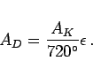

Inhalt Index DeskTop Bronstein

 Geometrie Sphärische Trigonometrie Haupteigenschaften sphärischer Dreiecke Allgemeine Aussagen
Geometrie Sphärische Trigonometrie Haupteigenschaften sphärischer Dreiecke Allgemeine Aussagen


Der Flächeninhalt AD eines sphärischen Dreieckes kann mit Hilfe des sphärischen Exzesses  und dem Kugelradius R gemäß
und dem Kugelradius R gemäß
berechnet werden, wobei  der Umrechnungsfaktor
der Umrechnungsfaktor  (3.179c) ist. Nach dem Satz von GIRARD gilt mit AK als Kugeloberfläche
(3.179c) ist. Nach dem Satz von GIRARD gilt mit AK als Kugeloberfläche
|  | (3.190b) |
Ist nicht der Exzeß bekannt, sondern die Seiten, dann kann  mit der Formel von L'HUILIER berechnet werden.
mit der Formel von L'HUILIER berechnet werden.